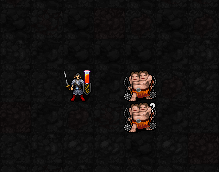
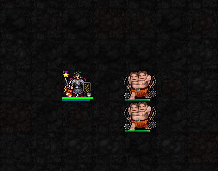

발동과 강화 상태
캐릭터 주위의 세 시약 고리가 강화 상태를 표시합니다. 남은 횟수·시간·다음 조합은 게임 상태창에도 표시됩니다.

열충격 → 폭발 → 점액 → 열충격 순서
표식 준비 없이 두 시약 동시 주입 → 강화 반응
해금: 신앙 ★★★★★(120) · 최소 기도술 제한 없음.
발동: MP6·신앙10·0.5턴 / 지속: 발동 후 8턴 또는 피해를 준 공격 주문 4회 중 먼저 끝날 때까지.
재사용: 발동 시점부터 20턴. 이후 주문의 원래 MP는 따로 소모합니다.
캐릭터 주위의 세 시약 고리가 강화 상태를 표시합니다. 남은 횟수·시간·다음 조합은 게임 상태창에도 표시됩니다.

열충격 → 폭발 → 점액 → 열충격 순서
기존 표식 없이 발동합니다. 같은 주문의 다단히트·광역 적중은 강화 횟수 하나만 소모합니다.
3성보다 두 번 맥동하는 강화 연출. 폭발·점액의 3×3 색상 테두리와 주변 타격도 유지됩니다.
3성과 비교한 강화 효과
열충격: 피해 +50%, AC 완전 무시 · 대상 한 명.
폭발·점액: 피해 +35% · 대상과 주변 1칸(3×3)의 적.
강화 점액: 이동 시간 +50%를 4턴간 적용. 공격·시전 속도는 그대로입니다.
기도술 12 예시: 열충격 ⌊3d9 × 0.85 × 1.5⌋ / 폭발 ⌊2d8 × 0.85 × 1.35⌋ / 점액 ⌊2d5 × 0.85 × 1.35⌋. 피해 배율은 합쳐서 한 번만 버립니다.
강화 횟수 4 → 3
다음 반응: 폭발
강화 횟수 3 → 2
다음 반응: 점액
강화 횟수 2 → 1

다음 반응: 열충격
강화 횟수 1 → 0
마지막 횟수 소모 · 시약 고리 종료
실제 게임 엔진의 일반 마법의 다트로 촬영한 고정 시험 장면입니다. 기본 턴 경과를 생략해 네 번의 반응을 이어 보여주며, 실제 플레이에서는 8턴 제한도 함께 적용됩니다. 빗나감·0피해에는 강화 횟수를 쓰지 않지만 주문 MP·행동 시간은 정상 소모합니다. 반응 중심은 주문당 최대 한 곳. 주변 피해는 적에게만 적용되며 벽을 통과하지 않습니다.